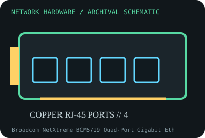

[ MODEL-SPECIFIC NETWORK HARDWARE RECORD ]
Broadcom NetXtreme BCM5719 Quad-Port Gigabit Ethernet Controller
Four-channel PCIe Gigabit Ethernet controller, commonly found on server NICs and system boards. This record identifies the stated model/revision; visually similar products may use different silicon or firmware.

IDENTIFICATION: Verify the full label, board revision, vendor/device IDs and regulatory markings before selecting firmware or drivers. Nominal PHY/link rates below are not measured application throughput.
Specifications and compatibility
| Subcategory | Ethernet adapters |
|---|---|
| Exact model | Broadcom NetXtreme BCM5719 Quad-Port Gigabit Ethernet Controller |
| Interface and connector | Controller connects over PCI Express; common add-in implementations use PCIe 2.0 x4 and four RJ-45 ports. This is a controller record, not a single universal card layout. |
| Controller / PHY / radio | Four integrated 10/100/1000BASE-T MAC/PHY channels; exact magnetics, LEDs and port placement belong to the host board or adapter. |
| Nominal throughput (not a test) | Four 1 Gb/s nominal Ethernet links; 4 Gb/s aggregate line rate only when all four links are active, not an observed transfer rate. |
| Measured throughput | No measured throughput is asserted. Benchmark board-level devices separately; OEM BIOS, PCIe wiring, cooling and driver configuration affect results. |
| Driver / OS / firmware | Linux bnx2 driver with matching firmware is commonly used; Broadcom and server OEM packages support selected Windows Server releases. Firmware bundles and supported OS versions are board/OEM dependent. |
| Compatibility | Requires a board wired for the BCM5719 and the correct OEM firmware. A chip alone does not specify a replaceable NIC, port arrangement, bracket or pinout. |
| Variant warning | BCM5719 silkscreen/chip identification does not prove card model or firmware compatibility. Do not flash generic firmware onto an OEM adapter; identify subsystem/vendor IDs and exact adapter P/N first. |
Variant and operating notes
BCM5719 silkscreen/chip identification does not prove card model or firmware compatibility. Do not flash generic firmware onto an OEM adapter; identify subsystem/vendor IDs and exact adapter P/N first.
Linux bnx2 driver with matching firmware is commonly used; Broadcom and server OEM packages support selected Windows Server releases. Firmware bundles and supported OS versions are board/OEM dependent.
Throughput policy: vendor/standard rates are labeled nominal. This archive includes no measured benchmark for this specimen; do not interpret a link rate or aggregate port capacity as sustained payload performance.
Archival, ESD and preservation notes
Archive the host adapter model, BCM5719 marking, PCI IDs, firmware blob/version, port mapping and board revision. Protect exposed boards in ESD-safe packaging; avoid chip pressure or scraping thermal interfaces.
Preserve the exact model/revision, serial/date code, firmware and driver versions, accessories, condition, source provenance, and source-document revision. Never retain access credentials or undocumented secrets in the public catalog.
Manufacturer and standards sources
- Broadcom Ethernet controller product informationManufacturer or standards reference; match the complete model/revision before applying specifications.
- Linux kernel bnx2 driver documentationManufacturer or standards reference; match the complete model/revision before applying specifications.
- IEEE 802.3 Ethernet standardsManufacturer or standards reference; match the complete model/revision before applying specifications.
Source coverage can be family-level; manufacturer documentation for the exact part number and hardware revision takes precedence. Standards describe protocol behavior, not a promise of real-world performance.